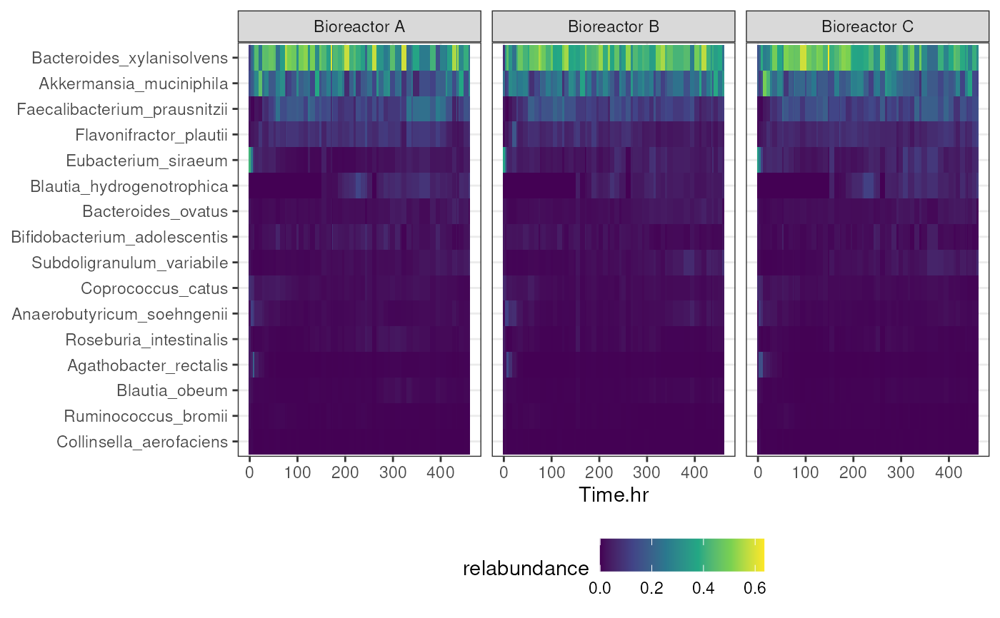
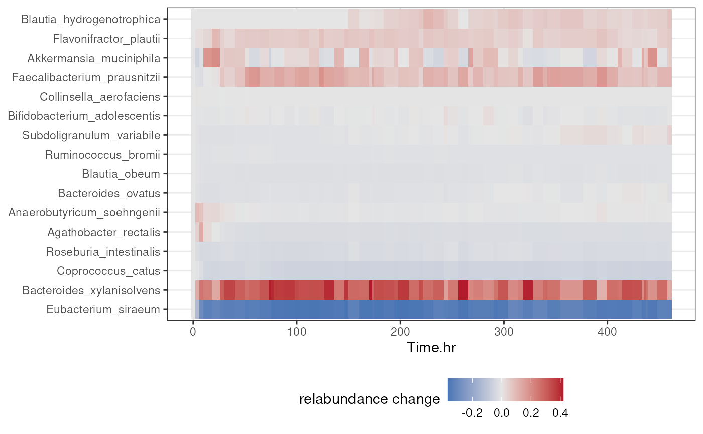
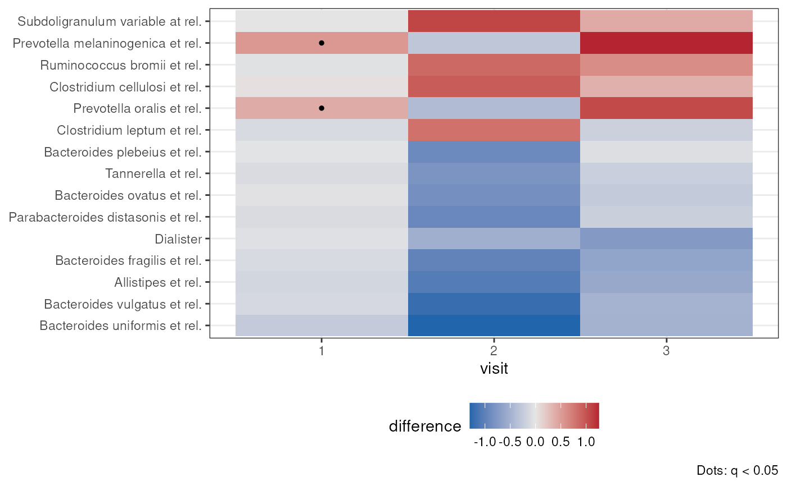
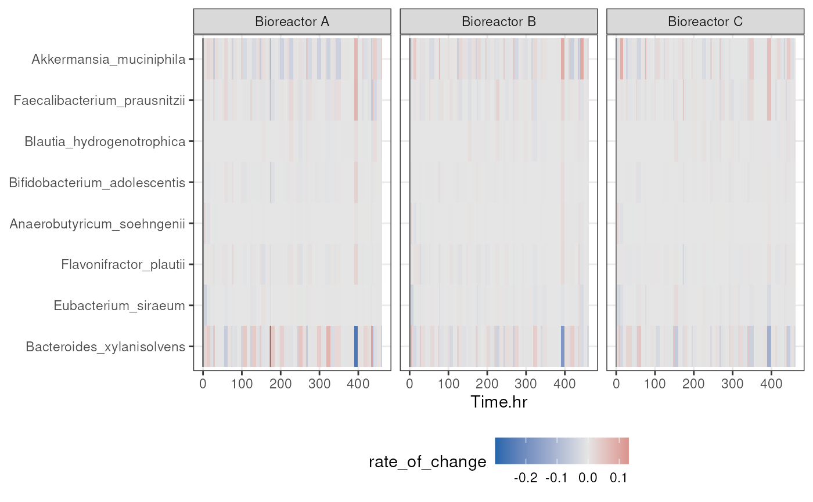
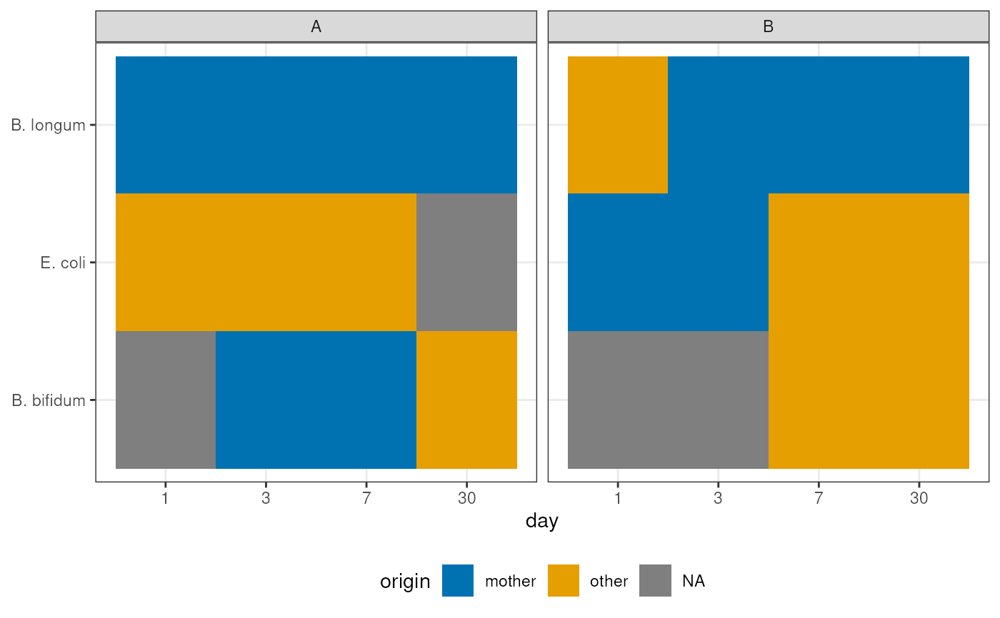

plotTiles() draws a features by time heatmap of an assay, one
panel per subject or per group of subjects.
Usage
plotTiles(x, ...)
# S4 method for class 'SummarizedExperiment'
plotTiles(
x,
time.col,
group = NULL,
assay.type = "counts",
features = NULL,
top = 20,
value = c("raw", "change", "occupancy"),
detection = 0,
order.by = c("mean", "cluster"),
level = c("subject", "group"),
group.by = NULL,
max.gap = NULL,
...
)
# S4 method for class 'data.frame'
plotTiles(
x,
time.col,
effect,
p.col = NULL,
threshold = 0.05,
features = NULL,
top = 20,
order.by = c("mean", "cluster"),
feature.col = "feature",
group = NULL,
max.gap = NULL,
...
)
# S4 method for class 'MultiAssayExperiment'
plotTiles(x, ..., experiment = 1L)Arguments
- x
a
SummarizedExperimentobject, or adata.frameof results with one row per feature and time point, such as differential abundance at each visit.- ...
additional arguments passed to
geom_tile.- time.col
Character scalar. Specifies the column fromcolData(x), or of adata.framex, that contains times: numeric,Date,POSIXctor a factor of visits. Time differences, as inmax.gap, are in days forDateand hours forPOSIXcttimes.- group
Character scalar. Specifies the column fromcolData(x), or of adata.framex, that identifies subjects. IfNULL, all samples, or all rows, form one series. (Default:NULL)- assay.type
Character scalar. Specifies the assay to plot. (Default:"counts")- features
Character vector. Features to plot. IfNULL, plots thetopfeatures with the largest mean, or for adata.framethe largest mean absolute effect or, for a categorical effect, the most cells with a value. (Default:NULL)- top
Integer scalar. Number of features to plot whenfeaturesisNULL. (Default:20)- value
Character scalar. Plots the assay values ("raw"), their change from the first sample of each subject ("change"), or presence, a value abovedetection("occupancy"). Effects from a results table are drawn by thedata.framemethod. (Default:"raw")- detection
Numeric scalar. Withvalue = "occupancy", a feature is present in a sample when its value is above this. (Default:0)- order.by
Character scalar. Orders features by their mean plotted value, largest at the top ("mean"), or by hierarchical clustering of their profiles ("cluster"). For a categorical effect,"mean"puts the features with the most cells with a value at the top, and clustering counts the cells where two features differ. (Default:"mean")- level
Character scalar. Draws one panel per subject ("subject") or averages the subjects of eachgroup.bygroup at each time ("group"); occupancy then becomes the share of subjects with the feature. (Default:"subject")- group.by
Character scalar. Specifies the column fromcolData(x)that groups subjects whenlevel = "group". IfNULL, all subjects form one group. (Default:NULL)- max.gap
Numeric scalar. Leaves blank the gaps between consecutive times that are further apart than this, intime.colunits: a tile reaches at mostmax.gap / 2from its time.NULLnever leaves gaps. (Default:NULL)- effect
Character scalar. For adata.frame, the column of effects: numbers, such as log fold changes at each time point, or categories (character, factor or logical), such as the strain or origin of a feature in each sample.- p.col
Character scalar. For adata.frame, the numeric column of p-values or adjusted p-values; cells belowthresholdare marked with a dot. (Default:NULL)- threshold
Numeric scalar. Significance level forp.col. (Default:0.05)- feature.col
Character scalar. For adata.frame, the column of feature names. (Default:"feature")- experiment
Character scalarorinteger scalar. For aMultiAssayExperiment, the experiment to plot; its samples get thecolDataofx. (Default:1L)
Details
Each sample covers the time from halfway to its previous sample to halfway to its next one, so the time axis keeps the spacing of the sampling times. Visits are evenly spaced. Missing values are drawn grey, times without a sample blank.
A categorical effect draws maps such as the strain of each species in the samples of mother-infant pairs (Ferretti et al. 2018, Fig. 4A, doi:10.1016/j.chom.2018.06.005 ).
Examples
# 16 species in three bioreactors
data("minimalgut", package = "miaTime")
tse <- mia::transformAssay(minimalgut, method = "relabundance")
plotTiles(tse, time.col = "Time.hr", group = "StudyIdentifier",
assay.type = "relabundance")

# Change from the start, clustered, averaged over the bioreactors
plotTiles(tse, time.col = "Time.hr", group = "StudyIdentifier",
assay.type = "relabundance", value = "change",
order.by = "cluster", level = "group")

# Clr difference between men and women at each visit, with Wilcoxon
# q-values below 0.05 marked
data("hitchip1006", package = "miaTime")
tse <- hitchip1006[, !is.na(hitchip1006$sex)]
tse$visit <- ave(tse$time, tse$subject, FUN = rank)
tse <- mia::transformAssay(tse, method = "clr", pseudocount = 1)
mat <- SummarizedExperiment::assay(tse, "clr")
res <- do.call(rbind, lapply(1:3, function(v) {
m <- mat[, tse$visit == v]
male <- tse$sex[tse$visit == v] == "male"
data.frame(feature = rownames(m), visit = v,
difference = rowMeans(m[, male]) - rowMeans(m[, !male]),
p = apply(m, 1, function(f) wilcox.test(f[male],
f[!male])$p.value))
}))
res$q <- p.adjust(res$p, method = "fdr")
plotTiles(res, time.col = "visit", effect = "difference", p.col = "q",
top = 15)

# Rate of change of each species in each bioreactor, from miaTime
tse <- mia::transformAssay(minimalgut, method = "relabundance")
change <- miaTime::getShortTermChange(tse, assay.type = "relabundance",
time.col = "Time.hr", group = "StudyIdentifier")
plotTiles(as.data.frame(change), time.col = "Time.hr",
effect = "rate_of_change", feature.col = "FeatureID",
group = "StudyIdentifier", top = 8)

# Origin of the strain of each species in two infants (illustrative
# values, not data)
strains <- data.frame(infant = rep(c("A", "B"), each = 12),
species = rep(rep(c("B. longum", "B. bifidum", "E. coli"),
each = 4), 2),
day = factor(rep(c(1, 3, 7, 30), 6)),
origin = c("mother", "mother", "mother", "mother",
NA, "mother", "mother", "other",
"other", "other", "other", NA,
"other", "mother", "mother", "mother",
NA, NA, "other", "other",
"mother", "mother", "other", "other"))
plotTiles(strains, time.col = "day", effect = "origin",
feature.col = "species", group = "infant")
